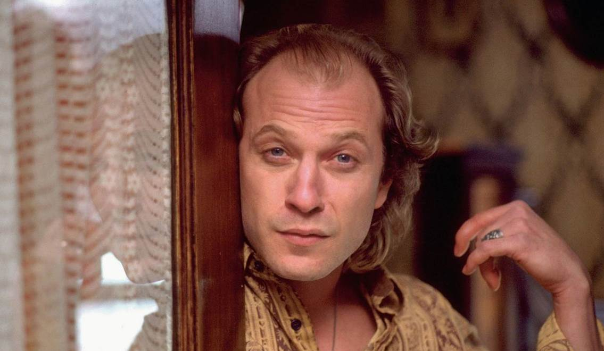
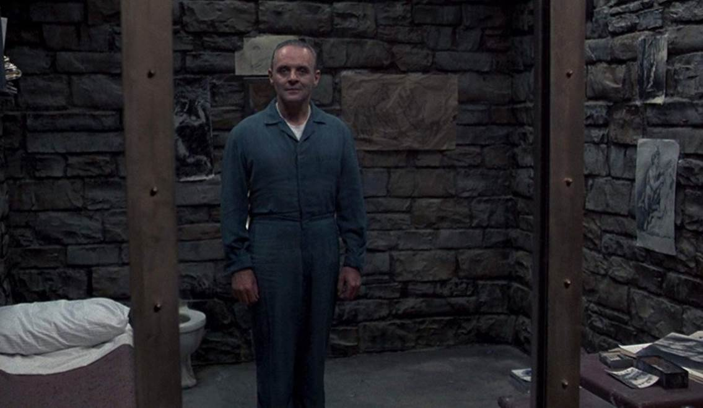
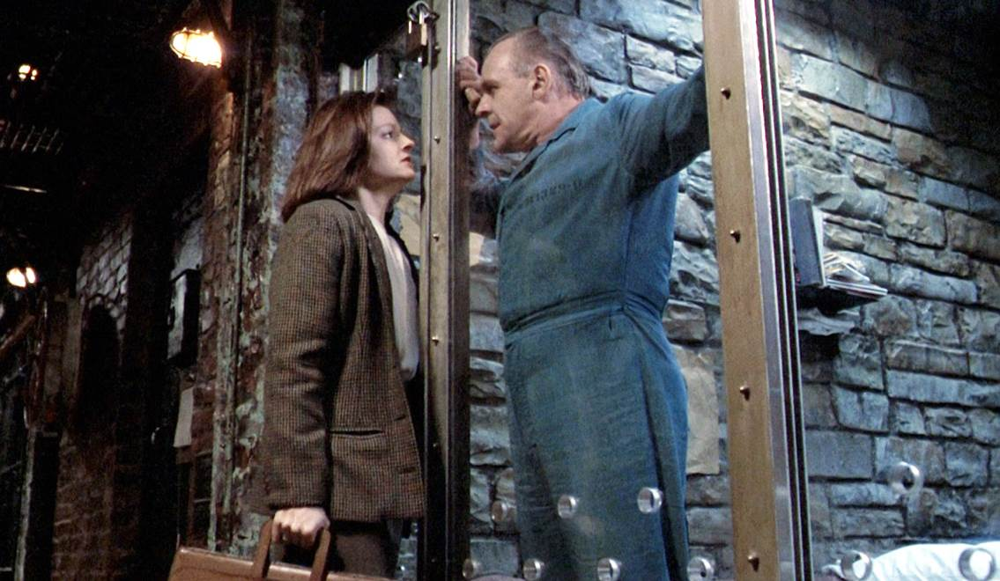
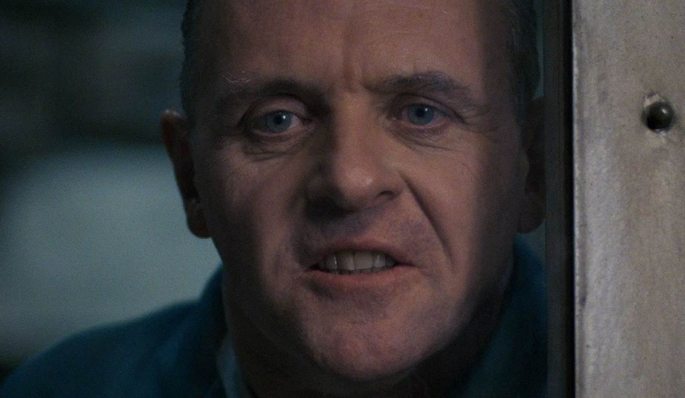

Phim Kinh Điển: Sự Im Lặng Của Bầy Cừu – Tiếng Thét Đẫm Máu Và Gã Bác Sĩ Bệnh Hoạn
“Đàn cừu đã ngừng kêu la chưa Clarice?”
Sau vài câu chúc mừng cô nhân viên tập sự chính thức gia nhập FBI, bác sĩ Lecter rời đi và theo dấu “con mồi” tiếp theo. Một kết thúc mở đi kèm ngụ ý đầy ám ảnh, tội ác kinh hoàng đang sắp diễn ra.
The Silence Of The Lambs (Sự Im Lặng Của Bầy Cừu) là tuyệt phẩm đã chiến thắng “Big Five” tại Oscar năm 1992 với hầu hết các giải thưởng quan trọng nhất. Đồng thời cũng là phim kinh dị - trinh thám duy nhất tính đến thời điểm hiện tại được xướng tên ở hạng mục Phim Hay Nhất.

Sở hữu nội dung không hề kén người xem với những tình tiết ẩn dụ mang tính đánh đố, kịch bản phim theo chân Clarice Starling – nữ thực tập sinh đang trong quá trình huấn luyện để trở thành FBI, được giao nhiệm vụ tiếp cận với tay bác sĩ tâm thần ăn thịt người Hannibal Lecter. Việc này nhằm mục đích thu thập thông tin điều tra về vụ án của “Buffalo Bill” – gã sát nhân có sở thích lột da phụ nữ.
Thứ gây ám ảnh và cũng được xem là thú vị ở Sự Im Lặng Của Bầy Cừu chính là khâu xây dựng tính cách nhân vật, cùng màn thể hiện đẳng cấp của dàn diễn viên.
Trước khi tham gia dự án, Anthony Hopkins vẫn còn là cái tên mới lạ đối với khán giả đại chúng mê điện ảnh, ông hoạt động chủ yếu ở mảng sân khấu và là một diễn viên kịch nổi tiếng tại Anh. Năm 1980 trong bộ phim The Elephant Man của đạo diễn David Lynch, ông vào vai một vị bác sĩ nhân hậu, hết lòng giúp đỡ nhân vật “Người Voi” - John Merrick (John Hurt). Hơn 10 năm sau, lại một lần nữa Anthony Hopkins hóa thân thành Hannibal Lecter - cũng là bác sĩ, kẻ có kiến thức vô cùng uyên bác cùng khả năng thao túng tâm trí con người.
“Hắn ta đánh vỡ hàm của nữ y tá để lấy được lưỡi cô ta. Mạch của hắn không lên quá 85 nhịp, kể cả lúc đang ăn lưới cô ấy”.

Dành thời gian để nghiền ngẫm kịch bản hàng trăm lần, phác họa và nghiên cứu tính cách nhân vật lên tới 120 trang giấy, tập luyện liên tục đến khi ra được chất giọng cao thanh đầy ma mị. Anthony Hopkins đã hoàn toàn trở thành gã bác sĩ tâm thần đầy máu lạnh với ánh mắt như nhìn xoáy vào tâm can người đối diện. Chỉ xuất hiện vỏn vẹn 16 phút, nhưng Hopkins đã biến 16 phút ngắn ngủi ấy trở thành một show diễn của cá nhân ông, một diva xuất chúng giữa bữa tiệc điện ảnh với những khoảnh khắc bất hủ.
Sự đáng sợ của Hannibal Lecter đã khiến nhân viên tại trường quay lẫn người bạn diễn Jodie Foster phải dè chừng. Hắn đại diện cho thứ trí óc siêu việt, ngoài việc am tường hội họa, gu thưởng thức âm nhạc quý tộc, thì khả năng nắm bắt tâm lý của bất cứ ai để rồi dần gieo cấy vào đầu họ những tư tưởng cuồng loạn, đã cho thấy bản lĩnh không tầm thường. Ngoài ra sự lịch lãm, nét phong độ của người đàn ông thành đạt, cử chỉ khéo léo, tinh tế trong việc cư xử, cùng tài chế biến thịt người thượng thừa đủ giúp Hannibal Lecter ghi điểm như một quý ngài hoàn hảo đầy lý tưởng.
Xem việc ăn thịt người là một thú vui tao nhã, hà cớ gì Lecter lại bỏ qua cô học viên còn non kinh nghiệm như Starling? Thật ra ngay từ lần đối mặt đầu tiên, gã đã áp đảo Starling và thậm chí còn đe dọa “xã giao” bằng câu thoại kinh điển “Có một tay điều tra từng thử tôi, tôi đã ăn gan hắn với một ít đậu fava kèm theo chai vang Chianti hảo hạng”.
Điều khiến Lecter có vẻ quý mến Starling có lẽ là bởi sự chân thành. Bằng vài câu nói, hắn đã thâm nhập vào thế giới nội tâm đầy hỗn loạn của cô nàng, nơi mà mọi tổn thương đều khởi nguồn từ cái chết của người cha và tiếng thét ám ảnh của bầy cừu trong quá khứ.
Trên cương vị là người bác sĩ, hắn đã thật tâm muốn chữa lành vết thương trong lòng Starling, bằng cách đưa ra những gợi ý giúp cô phá vụ án Buffalo Bill. Mặt khác, sau tất cả Starling vẫn là một điều tra viên thông minh, mạnh mẽ và có sự khác biệt với những nạn nhân trước đây của gã, vì vậy Lecter đã xem đây như một dạng ‘tri kỷ”, hắn xin lỗi vì lúc đầu đã thô lỗ với cô, sau đấy lại tử tế và vô cùng tôn trọng người bạn đặc biệt này của mình.
Nếu Lecter là tuýp anh bạn thông minh, tháo vát, một cuốn “bách khoa toàn thư” luôn có thể giải quyết mọi rắc rối, thì Starling là kiểu người thích hợp để kết bạn “tâm giao”, có thể lắng nghe mọi tâm sự và đưa ra lời động viên tích cực nhất.
Clarice Starling thông minh không kém Hannibal Lecter, mọi ám hiệu được vị bác sĩ nhắc đến cô đều tìm ra lời giải. Góc quay trong phim luôn được bố trí nhắm đến chính diện gương mặt của các nhân vật, từ đó họ nhìn trực tiếp vào ống kính và thoại. Từ đây khán giả như được tham gia vào cốt truyện chính, họ sẽ có lúc đứng ở vai trò của Starling, cảm nhận được nỗi sợ và sự lo lắng khi đối diện Lecter. Cũng như khi cô diễn, người xem cảm nhận được lòng can đảm pha lẫn chút tinh ranh thông thái của Starling, cô không hề cho thấy bản thân sẽ là “con mồi” tiếp theo của tên sát nhân khát máu kia.

Jodie Foster đã là siêu sao sở hữu tượng vàng Oscar ở thời điểm tham gia Sự Im Lặng Của Bầy Cừu. Ở tuổi 14, cô bé Jodie Foster đã có vai diễn nội tâm đầy phức tạp gây tranh cãi khi vào vai gái điếm trong Taxi Driver (1976). Được hợp tác với huyền thoại Robert De Niro lúc ấy nhưng Jodie không hề tỏ ra lép vế khi đứng chung khung hình với ông, tài năng của cô từ đây được chú ý nhiều hơn. Năm 1988 bộ phim The Accused ra mắt và nhận được nhiều lời khen từ giới phê bình, diễn xuất kinh ngạc của Jodie Foster giúp đem về cho cô giải thưởng Nữ Chính Xuất Sắc của Viện Hàn Lâm.
Để chuẩn bị cho vai Clarice Starling, Jodie Foster đã dành thời gian để huấn luyện như một thực tập sinh FBI thực thụ. Ban đầu Michelle Pfeiffer và Meg Ryan, hai nữ ngôi sao ở thời điểm ấy đều được nhắm đến cho vai chính, tuy nhiên họ đã từ chối bởi chủ đề phim quá đen tối. Riêng Jodie Foster ngay sau khi đọc tiểu thuyết gốc đã rất hào hứng và muốn tham gia vào dự án, sự cố gắng của cô đã được đền đáp bởi quả ngọt là giải Oscar thứ hai trong sự nghiệp.
Nếu như trước Athony Hopkins, khá nhiều ngôi sao đã được cân nhắc cho vai Hannibal Lecter như Sean Connery, Dustin Hoffman, Al Pacino…, thì gã sát nhân Buffalo Bill hoàn toàn dành riêng cho nam diễn viên Ted Levine. Sự biến thái, man rợ và khát khao nhục dục của Buffalo Bill đã làm nhiều người phải ớn lạnh. Ánh mắt đi cùng biểu cảm không bình thường của Ted Levine chỉ mới là màn khởi động. Trên trường quay, ông đã khiến cả đoàn làm phim phải sốc là khi xỏ khuyên ở đầu ngực, tiếp theo là kinh ngạc ở cảnh khỏa thân nhảy múa mang tính “biểu tượng”. Mọi thứ diễn ra đều không có trong kịch bản, thậm chí đạo diễn của phim là Jonathan Demme bắt đầu lo sợ khi Ted Levine giấu bộ phận sinh dục của mình vào giữa hai chân, thể hiện màn lột xác thành phụ nữ.

Khi ra mắt tại các rạp chiếu phim, Sự Im Lặng Của Bầy Cừu nhận được phản hồi tích cực từ phía hội đồng chuyên môn và cả công chúng. Kịch bản hấp dẫn, tình tiết được xây dựng thông minh cùng sự xuất sắc của dàn diễn viên đã ghi điểm tuyệt đối, tất cả đều cho thấy đây là một trong những siêu phẩm về đề tài kinh dị phá án từng được phát hành.
Tính đến nay, chỉ duy nhất ba tác phẩm điện ảnh từng vinh dự nhận “Big Five” Oscar, đấy là It Happened One Night (1934), One Flew Over The Cuckoo’s Nest (1975) và The Silence Of The Lambs (1991). Tuy đã gần 30 năm trôi qua, giá trị và sức hút vẫn không hề sụt giảm, Sự Im Lặng Của Bầy Cừu xứng đáng nằm trong danh sách những bộ phim hay nhất mọi thời đại.
